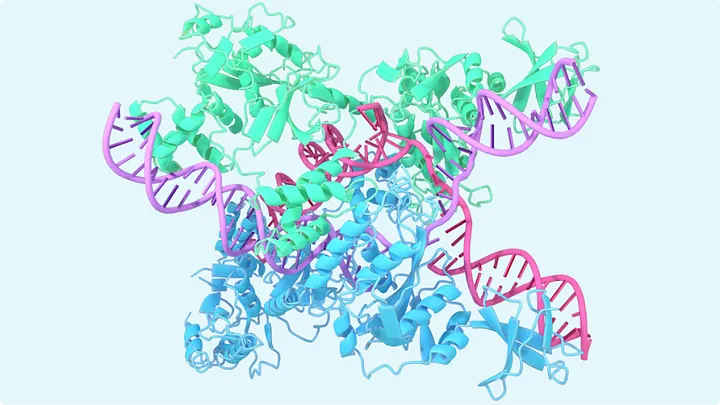
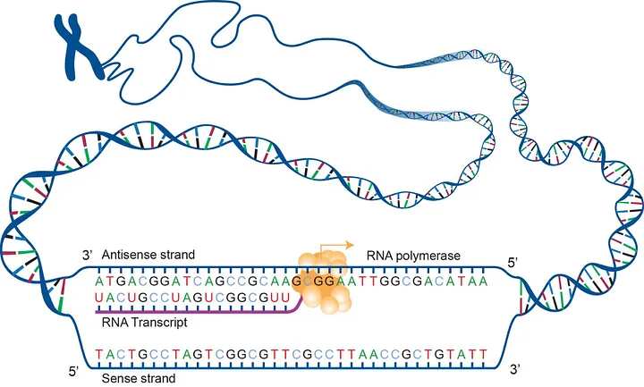
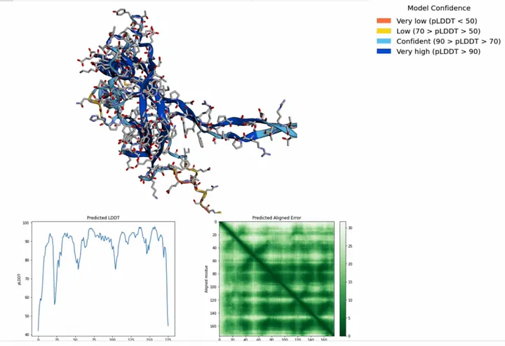
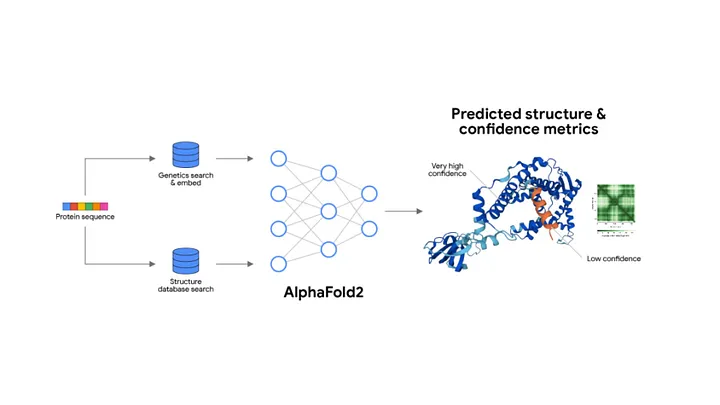

🧬 Anatomy of AlphaFold: How Deep Learning Solved Protein Folding
The model That Predicts 3D Protein Structures from 1D Sequences with molecular accuracy-Unpacking the Attention Mechanisms, Evolutionary Features, and Geometric Reasoning Behind AlphaFold
⸻
Proteins are the building blocks of life. Every cell, every virus, every biological function involves proteins doing things – folding into precise 3D shapes, binding to molecules, and catalyzing reactions. But predicting a protein’s 3D structure from its 1D amino acid sequence? That problem stumped science for 50+ years.
Then came AlphaFold – a deep learning system by DeepMind that predicted protein structures with atomic-level accuracy. It wasn’t a tweak or trick. It was a transformer-based revolution in computational biology which we will explore today.we will go through the fundamental layers demystify its verbose sounding blocks and then beinging it all together and break or down stage by stage.
🧱 Part 1: The Traditional Transformer Blocks Inside AlphaFold
Embedding Layer • What it does: Converts discrete amino acid tokens into dense vectors. • Why it matters: Turns biological sequences (like “MKTLL”) into something the network can understand and process. • Used on: The one-dimensional protein sequence (primary structure). ⸻
- Positional Encoding
• What it does: Injects information about the position of each amino acid into the embeddings.
• Why it matters: Protein folding is order-sensitive – the position of each residue is crucial to understanding structure.
• Used on: Every input sequence, including the Multiple Sequence Alignment (MSA) rows.
⸻
- Multi-Head Attention (MHA)
• What it does: Finds important relationships between amino acids – both within a sequence and across species (via MSA).
• Why it matters: Captures evolutionary signals (e.g. conserved regions across thousands of sequences).
• Used on: MSA features, pairwise features, and structure refinement.
softmax turns the dot-product of queries and keys into attention weights (a probability distribution across tokens).
✅ This is inside every attention head, in every transformer block, so you’ll see softmax used repeatedly – potentially hundreds of times in a deep model.
▪️ Where it is:
• Inside each MHA block.
• Often used once per head, per attention block, per layer.
ReLU and Dense are individual transformer layers. Softmax is not – it’s a subroutine that lives inside Multi-Head Attention.
⸻
- Layer Normalization
• What it does: Stabilizes activations and ensures gradient flow.
• Why it matters: Essential for training deep networks (AlphaFold has hundreds of layers).
• Used in: Every major block, especially before and after attention or feedforward layers.
Layer Normalization
• Normalizes all features of a single input (observation).
• It ensures that the input to the next layer has mean 0 and standard deviation 1, per observation.
• Used in Transformers, where batch size may vary or input sequences are processed independently.
✅ Every multi headed attention or dense feed forward layers is surrounded by residuals
⸻
- Residual Connections
• What it does: Adds the original input back to the output of each block.
• Why it matters: Prevents degradation of information across layers and helps with gradient flow.
• Used in: All transformer blocks (MSA stack, Pair stack, Structure module).
It combines the features of all previous layers which allows for deep learning models to extract patterns over many layers
This keeps gradients flowing across the deep stack (AlphaFold has 48+ Evoformer layers!).
⸻
- Dense (Feedforward) Layers
• What it does: Applies linear transformations followed by non-linear activations (typically ReLU).
• Why it matters: Embeds patterns, transforms features, and builds the higher-level representations.
• Used in: Every module – MSA, pairwise, and structure modeling.
After each attention layer, AlphaFold – like all transformers – applies a standard feedforward block:
LayerNorm → Dense → ReLU → Dense → ReLU,
LayerNorm →
Dense (Linear) →
ReLU →
Dense (Linear again) →
Residual connection
which is repeated many times, each surrounded by residual connections. This pattern continues until the next attention block, creating deep hierarchies of transformation and embedding.
- ReLU Activation
• What it does: Introduces non-linearity after each dense layer.
• Why it matters: Enables the model to learn complex, non-linear biological relationships.
• Used in: Every feedforward block.
This layer standardizes the combined output across all features in the sample:
Mean = 0 • Standard deviation = 1 Applied per individual video embedding, not across the batch. Why? Because normalization makes learning stable and helps the model avoid overfitting to unusual variance in one part of the video. RELU layers are between each dense layer to ensure the greduents between them are passed to the next layer without loss of features as its goal is to upwards bound the gradients if its below o Even though AlphaFold is tailored to biology, it still builds on the Transformer toolkit you already know. Here’s what’s reused or adapted:
⸻
🧠 Evoformer Block: The Heart of AlphaFold, AlphaFold’s Core module
This is AlphaFold’s core architectural unit, and it’s where the real innovation happens. It has two main data flows
Stream A Stream B
MSA Representation Pairwise Representation
While AlphaFold uses familiar Transformer components like attention, layer norms, and residuals, its true power comes from biological insight baked into the architecture. The most important innovations are:
⸻
🧬 1. MSA Representation (Multiple Sequence Alignment)
What It Is:
AlphaFold doesn’t just look at one sequence of amino acids – it aligns thousands of related sequences (from many species) to identify evolutionarily conserved regions.
Think of it like:
“What parts of this protein stayed the same across millions of years of evolution? Those are likely critical to its final structure.”
How It Works:
• Each row in the MSA is a protein sequence from a different organism.
• Columns show which amino acid is at each position across sequences.
• These patterns form a 2D array (sequence length × number of similar proteins).
This MSA tensor gets passed through Transformer-style attention layers that focus on:
• Which positions are highly conserved
• Which rows show key mutations
The result: the model learns which parts of the protein are “structurally important” without needing human-labeled data.
📐 The 2 Dimensions of MSA:
- Rows = Different Species / Homologous Proteins
• These are proteins from other organisms that have similar sequences.
• Pulled from massive databases of known proteins (like UniRef, MGnify).
• The idea: nature has run billions of “experiments” – if parts of a sequence are preserved across evolution, they’re probably important.
- Columns = Sequence Positions (Amino Acid Sites)
• Each column shows variation at a specific position in the sequence.
• The model can observe how that position mutates across species and still preserves structure/function.
🎯 What the MSA Teaches the Model:
• Conservation: If a particular residue is nearly identical across species, it’s likely critical to the protein’s stability or function.
• Co-evolution: If two residues change together across species (correlated mutations), it’s a clue that they interact spatially in the 3D structure.
• Structural constraints: The MSA acts like a fingerprint – giving AlphaFold a probabilistic map of what the final 3D structure should look like, based on nature’s own “training data.”
⸻
🤝 2. Pairwise (2D) Representation
What It Is:
In addition to understanding individual residues (1D), AlphaFold builds a 2D representation of residue-residue pairs – essentially:
“How likely is it that amino acid interacts with amino acid in 3D space?”
This matrix captures potential spatial relationships across the sequence:
• Think of it as a map of distance potentials or interactions.
Why It Matters:
• Proteins fold into 3D shapes based on interactions between distant residues.
• The pairwise representation lets AlphaFold reason about long-range dependencies that a standard Transformer on sequences wouldn’t catch.
Piecewise linear projection is a way to transform the MSA features in small, learnable segments rather than with a single global transformation. This approach allows the model to:
• Focus on local patterns within specific subsections of the MSA,
• Handle nonlinear relationships more flexibly by applying separate linear mappings piecewise,
• Preserve the structure of the MSA during transformation without oversimplifying correlations.
In practice, this means the Evoformer can better detect which amino acid positions are crucial – those that remain conserved across species or show correlated mutations hinting at physical proximity in 3D space.
Why is this Important?
Traditional transformers apply global linear projections to entire feature vectors, which may miss nuanced local evolutionary signals embedded in the MSA’s structured layout. The piecewise linear projections empower AlphaFold to model these intricate signals more effectively, leading to better folding predictions.
By integrating these projections within attention and update mechanisms in the Evoformer, AlphaFold finely balances global context and local detail, enabling it to harness the evolutionary wisdom locked in millions of aligned sequences.
⸻
3.🧬 3D Structure Module (Inside the Evoformer)
After AlphaFold processes the MSA (Multiple Sequence Alignment) and Pairwise Representations, all of which pass through layers of multi-head attention, feedforward layers, layer norms, and residuals, we arrive at the final step:
➡️ Predicting the actual 3D structure of the protein.
This is where biology meets geometry – and where a transformer model must produce not text or logits, but spatial coordinates in 3D space.
⸻
🧩 What Actually Happens in the 3D Module?
Once the Evoformer encodes enough contextual information about:
• Evolutionary conservation (from MSA)
• Pairwise residue interactions (from the pairwise tensor)
…it hands that to the final Structure Module, which predicts the protein’s final folded shape.
This module predicts:
• Backbone coordinates for each amino acid residue (N, CA, C atoms)
• Angles and torsions (phi, psi, chi)
• Side chain orientations
• A confidence metric (pLDDT) for how sure it is of each prediction
⸻
🧠 But Architecturally, What Are These?
Despite sounding like physics engines, these layers are still:
• Dense feedforward layers
• Residual connections
• LayerNorms
• ReLUs
• Often: triangle multiplicative updates and geometric attention operations
They just operate on spatial representations – vectors and angles, not tokens.
The model uses an iterative refinement loop, where it:
Predicts structure
Feeds the structure back into the system (via recycling)
Refines predictions over multiple passes
Think of it as an internal feedback loop – much like a human sketching a rough shape and gradually refining it.
🧠 Summary of the 3D Prediction Module (Within Evoformer):
• Inputs: Rich embeddings from MSA and Pairwise pathways
• Applies: Standard transformer blocks adapted to geometric space
• Outputs: Final folded 3D coordinates of the protein structure
• Extras: Confidence scores (pLDDT), angle predictions, recycling for refinement
• Repeats: Like other transformer components, this module is deeply stacked
⸻
🧠 Key Insight:
AlphaFold isn’t running physics simulations. It’s using transformer layers to predict spatial geometry based on evolutionary signal – a pattern recognition task dressed in geometric clothing.
No special physics module. No new deep learning block. Just smart adaptation of standard layers to spatial prediction – proving again that transformers are not limited by data type, only by how we shape their inputs and outputs by the data we train them on.
🧬 What Data Is AlphaFold Trained On?
AlphaFold is trained on structured biological data – primarily protein sequence data and structural annotations. It does not use natural images, but it does work with data that represents 3D spatial structure, which is a key distinction.
AlphaFold’s input data, despite its biological and geometric complexity, is all processenex – not visual data. Meaning its all 1D data
Here’s a breakdown:
⸻
Primary Data: Protein Sequences (Text Data) • Input format: Sequences of amino acids – represented as 1D strings of letters, similar to how DNA or RNA are encoded. Pure 1D text: A chain of amino acids, represented by single-letter codes like • Example: “MKTAYIAKQRQISFVKSHFSRQLEERLGLIEVQ” Pure 1D text: A chain of amino acids, represented by single-letter codes like MTEYKLVVVGAGGVGKSALTIQLIQNHFVDEYDPTIEDSYRKQVVID…AlphaFold treats it as such – using tokenization and embeddings just like in NLP models. • These sequences are the starting point: the model must predict the 3D structure from this linear sequence. ⸻
- Multiple Sequence Alignments (MSAs)
Also text, but a bit richer:
Alignments of related protein sequences across species. • Represented as character matrices – like many lines of “text” with gaps -) for alignment. • Still token-based, still handled like sequence data. • A core input to AlphaFold is MSA data – sets of evolutionarily related protein sequences.
• These help the model identify conserved regions, structural motifs, and co-evolutionary patterns.
• MSAs provide a kind of context window, showing how a given sequence varies across species and time – this is like a biological “prompt” for the model.
⸻
- Template Structures (Optional, During Training)
• When available, AlphaFold is trained with known protein structures (from experiments like X-ray crystallography, cryo-EM).
• These are 3D coordinate data of atoms in the protein.
• They aren’t images, but they represent 3D spatial relationships – and the Evoformer + structure module predict these atom-by-atom.
⸻
- 3D Structure Representations
These are numerical tensors, not images: • Atom distances • Bond angles • Residue-residue contact maps • They’re 2D or 3D arrays – like heatmaps or matrices – but crucially, not pixel-based images. • Think: data in tensor form, not RGB images • AlphaFold does not learn from 3D renderings or visual images of proteins.
• Instead, it uses:
• Pairwise distance matrices
• Angle predictions
• 3D coordinate data
• These are geometric data structures, not visual data.
• The model outputs 3D coordinates of each atom – which can be visualized later, but visuals are not part of the training data.
⸻
📚 Main Training Datasets:
• Protein Data Bank (PDB)
Experimental 3D structures of proteins – core ground truth labels for AlphaFold.
• UniRef90 & UniProt
Massive repositories of amino acid sequences used for building MSAs and training sequence models.
• BFD (Big Fantastic Database)
A gigantic collection of protein sequences (~2.2 billion sequences) used to improve evolutionary context.
• MGnify
Adds more microbial diversity to MSAs, increasing generalization.
⛔ No Raw Visual Data
• AlphaFold doesn’t see images of proteins.
• It learns structural patterns by modeling the relationships between tokens and numeric tensors, not by analyzing pixel layouts.

🔍 What’s Actually Inside AlphaFold’s Fancy. Sounding Blocks?
Multiple Sequence Alignment (MSA) Stack This is the component that processes many related protein sequences in parallel (e.g., different species’ versions of the same protein) to find patterns.
What it really uses:
• ✅ Multi-Head Self-Attention (MHA)
Applied over rows (different species) of the MSA input. This helps identify conserved positions in the amino acid sequence.
• ✅ Feedforward layers (Dense → ReLU → Dense)
Standard MLP stack for transforming attention outputs.
• ✅ LayerNorm and Residual Connections
For stability and gradient flow, just like in vanilla transformers.
📌 Summary: This is exactly like the encoder in a normal Transformer – it just applies attention over sequences from different species.
⸻
- Pairwise Representation Stack (a.k.a. Pair Stack)
This holds information about relationships between amino acids (like distances, angles) – basically the protein’s internal geometry.
What it really uses:
• ✅ Axial Attention (a variation of MHA)
Attention is applied along different axes (rows vs. columns) to model pairwise relationships.
• ✅ Triangle Multiplication & Triangle Attention
Despite the exotic names, these are variations on attention + dense layers tailored to update 2D geometry-like structures. Think of them as custom-configured attention passes.
• ✅ Dense → ReLU → Dense
Standard MLP layers again.
• ✅ LayerNorm + Residuals
Used exactly as in other transformer layers.
📌 Summary: Fancy-sounding, but still standard transformer components applied to a 2D matrix representing amino acid pair relationships.
⸻
- Evoformer Block (The Core Repeating Unit)
This fuses information from both MSA and pairwise modules in an iterative loop.
What it really uses:
• ✅ Attention over MSA rows (species-wise attention)
• ✅ Attention across sequence positions
• ✅ Information flow between MSA ↔︎ Pairwise representations
Implemented with linear projections + cross-attention-like mechanisms.
• ✅ MLPs (Dense → ReLU → Dense)
• ✅ LayerNorm and Residuals
📌 Summary: The Evoformer is just a smart wiring of:
• Standard MHA
• Cross-updating mechanisms
• dense Feedforward layers
• Normalization + Residuals
…but no truly novel components under the hood.
⸻
- Structure Module (3D Prediction)
This is where AlphaFold converts all that abstract latent information into actual 3D coordinates.
What it really uses:
• ✅ Geometric projection heads
Linear layers that output 3D coordinates from pairwise & sequence representations.
• ✅ Invariant Point Attention (IPA)
This sounds fancy, but it’s really:
• Attention that respects 3D geometry
• Learned weights that predict positions relative to each other
• ✅ Rigid-body transformations & angle prediction layers
These are classic geometric modules used in 3D graphics and modeling – not learned layers, but algorithmic.
📌 Summary: This module translates latent features into 3D space. The only “special” part is the IPA, but even that is just attention designed with spatial awareness.
⸻
On Naming and Model Architecture:
If you’re an MLE or ML researcher you’ll recognize. all the components in AlphaFold:
Despite the specialized names like Evoformer, MSA Attention, or Pairwise Representations, AlphaFold uses the same fundamental architecture as a standard transformer.
. In AlphaFold – as with all transformer-based models – the input data passes through a set of preprocessing layers only once at the very beginning of the model. These include:
• Tokenization Layer: Converts raw input (amino acid sequences) into discrete tokens (e.g., one token per amino acid residue).
• Embedding Layer: Maps those tokens into dense vector representations – this gives each residue a place in vector space the model can work with.
• Positional Encoding: Injects sequence order into the model (since attention is permutation-invariant by default). This tells the model where each residue lies in the chain.
🧠 Why only once?
These steps are necessary to initialize the input into a form the transformer can “understand” and operate on. Once embedded, the transformer blocks – MHA, LayerNorm, Dense layers, etc. – take over and operate on those vectors repeatedly through many stacked layers.
This is consistent across all transformer class based models:AlphaFold, DeepSeek, GBT 4, grok 4,and all others.The real depth and learning happens in the transformer stack, but the initial embedding layers set the stage.
These components are repeated deeply, often over 100+ layers, just like other state-of-the-art transformer models.
So why the new names?
They’re not signaling brand-new architecture – rather, they reflect how these components are applied to a unique problem space: protein folding.
• MSA (Multiple Sequence Alignment) attention operates across evolutionarily-related protein sequences.
• Pairwise Representations track spatial relationships between residues.
• The Evoformer block is just a modular structure combining these insights using classic transformer layers.
At its heart, AlphaFold is not a new kind of neural network – it’s a new application of known transformer mechanics to biological data, trained on a uniquely structured and highly specialized dataset.
If you’re an MLE or ML researcher familiar with Transformers, you’ll recognize all the components in AlphaFold:
• Multi-Head Attention ✅
• continuous Dense → ReLU → Dense layers ✅
• LayerNorm ✅
• Residual Connections ✅
• Cross-Attention – like flows ✅
• Learned projection heads ✅
The only domain-specific twists are:
• The input data (protein sequences across species)
• The interpretation of outputs (3D structures which is not by itself abnormal as its defaukt in vision transformers which are usually trained in video)
• The vocabulary (MSA, Evoformer, Triangle Attention)
No exotic new attention types.
No novel activations.
No obscure architectures.
Just smart use of the original transformer stack – applied to proteins, and deeply repeated.
Before AlphaFold predicts the 3D structure of a protein, all the input data exists in flat, one-dimensional form. This includes:
Primary Protein Sequence • A simple chain of amino acids (e.g. MTEYKLVVVG…) • Each amino acid is represented by a single character • This is 1D text data – structurally no different from a sentence in natural language 2. Multiple Sequence Alignments (MSAs)
• Stacked rows of related protein sequences
• Appear like a matrix, but are fundamentally collections of 1D sequences
• Provide evolutionary context, but still fed into the model as tokenized strings
AlphaFold doesn’t see the 3D structure at the start. In fact, that’s exactly what it’s trying to predict.
All the data – sequence, alignment, even pairwise relationships – starts as non-visual, one-dimensional inputs. These must be transformed into rich, high-dimensional structure through reasoning, attention, and prediction.
Defining “The Fold”
The fold is the final 3D shape that a protein naturally assumes in biological space.
It’s governed by physical laws – bond angles, chemical forces, and spatial constraints.
AlphaFold infers this 3D fold from 1D sequence patterns using deep layers of transformer reasoning. The actual 3D shape (the “fold”) doesn’t exist in the input – it’s generated.
Stage-by-Stage Breakdown of the Model That Revolutionized Protein Folding
Stage 1: Input – Amino Acid Sequence
📥 Input: A target protein sequence (e.g., MVHLTPEEKSAVTAL…)
• This is a 1D sequence of amino acids (like a sentence made of letters).
• The goal is to predict its final 3D folded structure (shape), not just classify or generate text.
⸻
Stage 2: Multiple Sequence Alignment (MSA) Search
🔍 MSA Creation:
• The sequence is run through massive genomic databases (e.g., UniProt, MGnify) to find evolutionarily related sequences across species.
• These similar sequences are aligned into a 2D matrix:
• Rows = different homologous protein sequences
• Columns = aligned amino acid positions (residue positions)
💡 Why? Evolution conserves structure more than sequence – by comparing thousands of variations, AlphaFold learns which residues matter most for folding.
⸻
Stage 3: Initial Embedding
📦 The raw sequence and MSA are embedded into high-dimensional tensors:
• MSA Representation (N × L × d)
• N = number of aligned sequences
• L = length of the protein
• d = hidden dimension
• Pairwise Representation (L × L × d)
• Encodes interactions between every pair of amino acid positions.
⸻
Stage 4: Evoformer Block (Core Innovation)
🧠 This is the engine of AlphaFold – a custom transformer that processes:
• MSA features
• Pairwise features
🔄 Key Submodules inside Evoformer:
• MSA Attention → captures patterns across aligned sequences and residues
• Triangle Multiplication + Attention (Pairwise Update) → models geometric constraints between residue pairs
• MSA → Pairwise Communication and Pairwise → MSA Communication
✅ MSA tells the model:
“These residues are conserved across evolution – pay attention.”
It all about finding patterns
✅ Pairwise tells the model:
“These residues likely interact in 3D space – adjust geometry accordingly.”
This back-and-forth loop updates both views together.
Using pattern recognition the model refines its predictions
⸻
Stage 5: Structure Module (3D Folding Prediction)
📐 Once Evoformer has built rich MSA + pairwise embeddings, they are passed to the Structure Module:
• Predicts 3D atomic coordinates of the protein’s backbone (and optionally side-chains).
• Uses Invariant Point Attention (IPA): a geometry-aware attention mechanism that reasons in 3D space – rotationally and translationally invariant.
📤 Output: A predicted 3D protein structure (can be rotated like a molecule in space, but static once generated).
⸻
Stage 6: Recycling (Refinement Loop)
🔁 The prediction isn’t done in one shot. AlphaFold feeds the predicted structure back into the Evoformer multiple times (3–4 iterations), refining the geometry each pass.
This is like self-consistency feedback – the model “looks at its own prediction” and adjusts based on its learned structure logic.
⸻
Stage 7: Confidence Scoring
✅ pLDDT (Predicted Local Distance Difference Test):
• A per-residue confidence score from 0 to 100, showing how confident the model is in each region of the protein.
📊 Regions with high pLDDT are more likely to be correct – researchers can focus on these during experiments.
The special names (like MSA block, Pairwise block, Triangle Attention, Evoformer, etc.) exist only because AlphaFold is applying standard transformer machinery to a biological domain – specifically, amino acid sequences and spatial relationships between residues.
But under those names, they’re still using:
• 🧠 MHA for attention across sequences or residue pairs
• 🔁 Residuals for stable learning
• ⚙️ LayerNorm for normalization
• 🧱 Dense + ReLU (or GELU) for transformation
• 🔂 Recycling to iteratively refine predictions
⸻
🔬 AlphaFold’s Architecture: Not Magic, Just Applied Differently
• The Evoformer is just a domain-specialized transformer.
• Its MSA stack is like applying self-attention across protein sequences – using MHA, residuals, dense layers, and normalization, just like in DeepSeek or GPT.
• The Pairwise module tracks spatial relationships (angles, distances) between residue pairs – still using attention and dense layers
• Triangle attention is a clever tweak: it’s just a form of pairwise reasoning, capturing how residue A relates to B through C – structurally useful for predicting 3D folding.
• Recycling means running the whole thing multiple times, refining the latent embeddings each pass – this is similar to recurrence, but unfolded over transformer blocks.
Finally, the structure module takes those refined pairwise features and maps them into 3D coordinates for each amino acid – forming the final predicted structure.

AlphaFold’s output is like a 3D image – but not a traditional RGB image – it’s a 3D spatial structure:
• It tells you where in space each atom of the protein sits after folding.
• The result is typically rendered as:
• Backbone trace (like a ribbon or curve)
• Atomic detail (ball-and-stick or space-filling models)
• Color-coded confidence scores (e.g. blue = high confidence, red = low)
This is essentially a learned geometric prediction – turning a linear chain of amino acids into a spatially arranged molecule, atom by atom.
Its essentially a 3d image generator
AlphaFold’s output is like a 3D image – but not a traditional RGB image – it’s a 3D spatial structure:
• It tells you where in space each atom of the protein sits after folding.
• The result is typically rendered as:
• Backbone trace (like a ribbon or curve)
• Atomic detail (ball-and-stick or space-filling models)
• Color-coded confidence scores (e.g. blue = high confidence, red = low)
This is essentially a learned geometric prediction – turning a linear chain of amino acids into a spatially arranged molecule, atom by atom.
⸻
🧠 Analogy:
Imagine you had the blueprint (sequence) for folding a piece of origami – and AlphaFold tells you exactly what the final 3D sculpture looks like after folding it perfectly.
That’s why it was such a breakthrough – before AlphaFold, predicting 3D structure from 1D sequence was a massive unsolved problem in biology.
